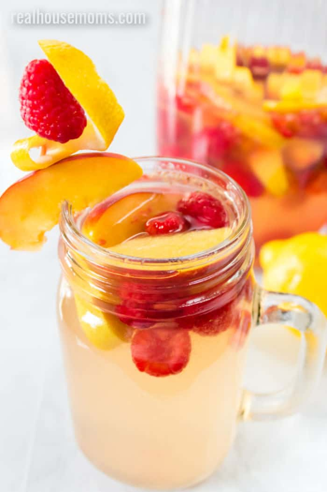

Index Page
Feeling Peachy

The still at Ozark Distillery
Summer afternoons around the camper or at the pool occasionally calls for a
relaxing drink. One of my favorite adult beverages happens to be moonshine and Ozark Distillery
moonshine offers a lot of options!! On this post I'll be sharing recipes I make with their peach
flavor!
If you are ever in the Lake of The Ozarks, Missouri area, take an afternnon and visit the distillery. They offer tastings and a full
resturant. You can also schedule a tour!! Its a neat experiance and a great way to spend an afternoon in the AC.
Peaches and Cream

Culinary Concoctions By Peabody
This simple and refreshing drink is super easy and you can keep
all the ingredients in a small travel cooler. Yay camping!!!
- 1 can of cream soda
- 2oz of peach moonshine
Peachy Keen

stole this picture from pinterest
Another super easy summer drink I love is peach tea and peach moonshine.
This one is a little less deliberate in exicution so please bear with me.
- Make or buy your favorite peach ice tea and put in into a pitch just a little too big. We need room!!
- Grab you peach moonshine and give it a pour!! I tend to be a little heavy handed here but that's not always a bad thing
- Cut up a fresh peach and garnish the top of the pitcher and any glasses you plan to use
- Pour your lovely tea into glasses and serve to guests!
Peach Sangria
 Brought to you by Aubrey at realhousemoms.com
Contrary to what this project might suggest i am not much of a drinker. While I do
enjoy a drink while camping I do keep it really simple. I have not tried this recipe
but I think it looks good so I might try it. Mind you this recipe is a bit more complicated
than my camping drinks so you will need a few more things.
- Dry white wine- something called a Sauvignon Blanc or Pinot Grigio
- Peach Moonshine- You already know my favorite
- Lemonade Concentrate
- Sugar
- Lemon-Lime Soda
- Fresh or Frozen Raspberries
- Fresh or Frozen Peaches
Ok so lets try mixing this up over at RealHouseMoms !!